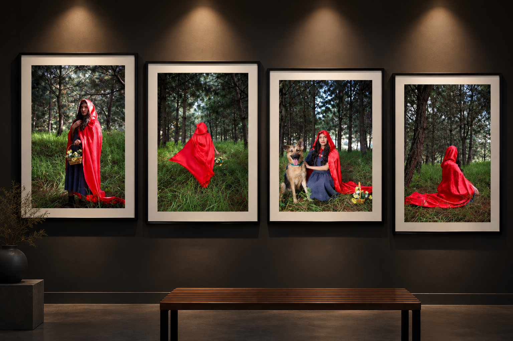
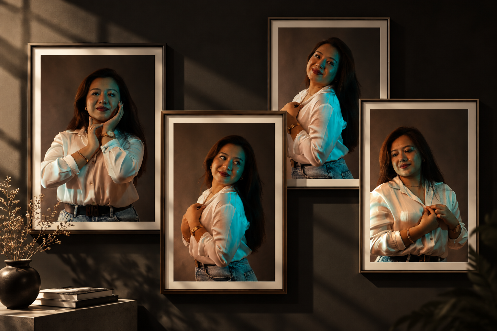
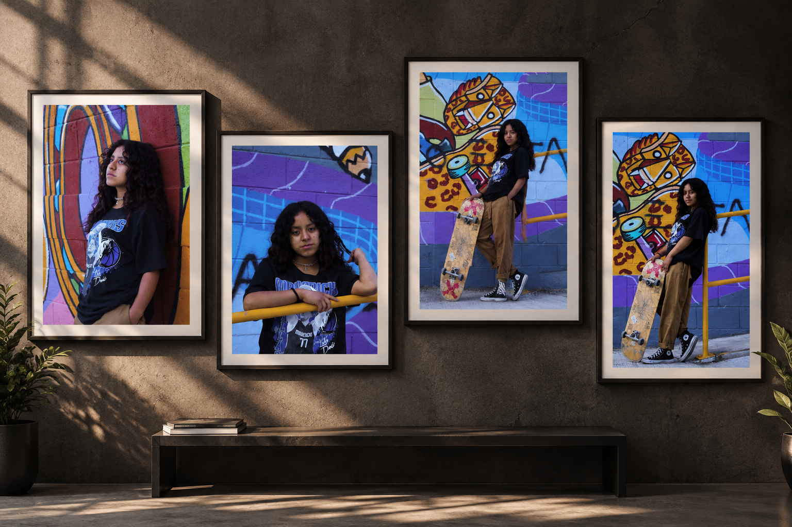
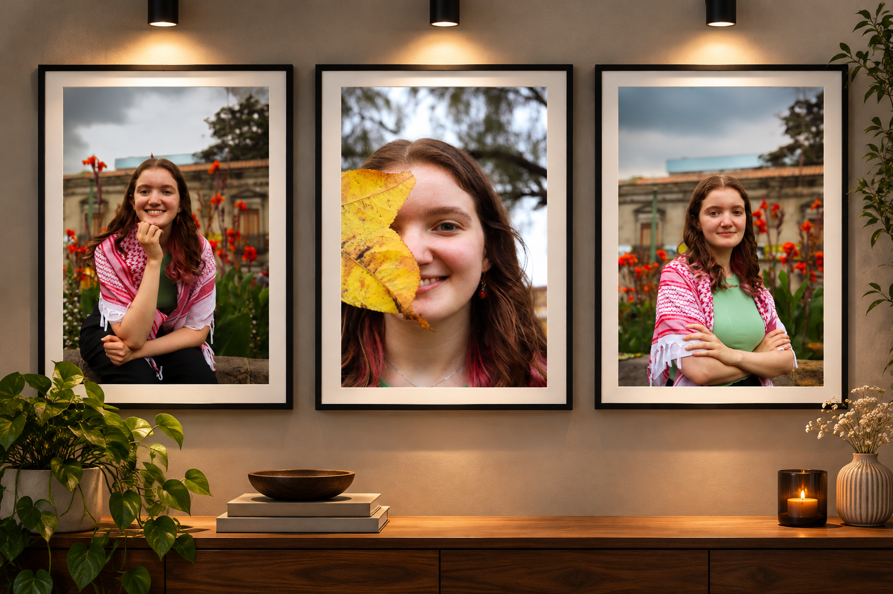

Proyectos Destacados

Caperucita Roja
Sesión inspirada en el cuento clásico, que buscó recrear su atmósfera de misterio. Mediante escenarios naturales, vestuario y distintas composiciones, se desarrolló una narrativa fotográfica que reinterpreta la historia y resalta el contraste entre el rojo y el bosque.
Explorar detalles →
Entre Luces
Retratos con estética diferente mediante iluminación cálida y tonos fríos, fondos oscuros y distintas poses.
Explorar detalles →
Esencia Urbana
Transmite personalidad juvenil y auténtica usando grafitis, colores vibrantes y poses naturales.
Explorar detalles →
Retratos Naturales
Sesión enfocada en capturar la naturalidad y personalidad de la modelo. Mediante luz natural, fondos florales y diferentes encuadres, se creó una serie de retratos que transmite frescura, cercanía y espontaneidad.
Explorar detalles →